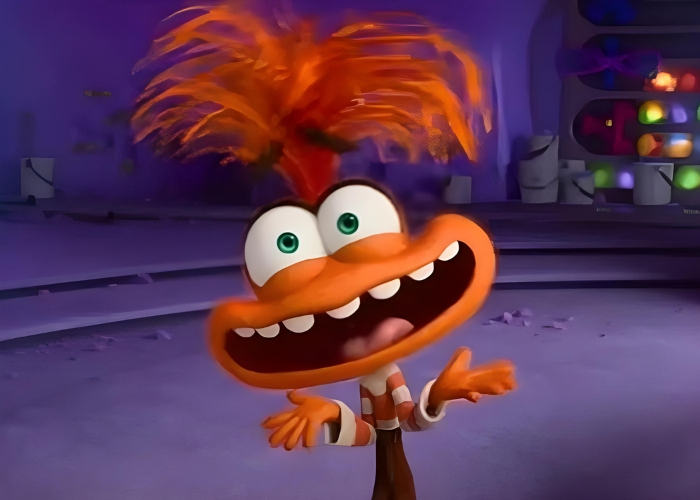

Quado eu era pequena
eu amava assistir Barbie.
Principalmente, as Barbies bailarinas.
Um dia eu estava na escola e do nada veio uma
musica da Barbie na minha cabeça, então eu me levantei
e começei a dançar ballet no meio da sala de aula.
Depois disso entraram em contato com a minha mãe,
ai minha pequena mente brilhante pensou:
Minha mãe vai vir a escola e vai me m@t@r
Vão só ligar pra minha mãe e avisar o que eu fiz e ela não vai brigar comigo
Ela vai me proibir de assistir Barbie.
No fim das contas falaram com a minha mãe e a reação dela e do meu pai foram rir, SÓ RIRAM .
Depois desse dia a minha mãe vive me lembrando desse acontecimento.
COISAS QUE EU GOSTO DE FAZER:

- Comer
- Dançar
- Comer de novo
- Cantar
- Conversar
- Assistir
- Comer de novo
- Mexer no celular
- Cozinhar(especificamente lanches nada saudavéis)
Ass: Antiga bailarina do Faustão :)